En esta sección te presentamos un juego que está basado en un concurso de televisión. Su presentador se llamaba Monty Hall. Parece ser que en la realidad el concursante no tenía posibilidad de cambiar de elección pero a raíz de ese concurso se generó, cambiando las reglas del concurso, un problema que resulta sorprendente y que queremos que conozcas.
En la escena que viene a continuación podrás ver el planteamiento del problema con burros. En esa escena el concurso se llama ABRIR Y GANAR.
Más adelante,un artículo de wikipedia te permitirá obtener más información sobre este problema, que se conoce como el problema de MONTY HALL.
Si fueras a ese concurso ¿qué harías? Razona tu respuesta
¿ CAMBIAMOS DE PUERTA ?
Si has jugado con la escena anterior seguro que ya has llegado a una conclusión sobre lo que resulta más ventajoso pero ¿sabes por qué?
En el concurso la búsqueda de un nuevo coche tras las puertas, el jugador elige inicialmente la puerta 1. El presentador le abre la puerta 3 y le revela que hay una cabra y le ofrece la posibilidad de elegir la puerta 2 en vez de la 1.
El concursante en el concurso televisivo debe elegir una puerta de entre tres (todas cerradas), el premio consiste en llevarse lo que se encuentra detrás de la elegida. Se sabe con certeza que tras una de ellas se oculta un automóvil, y tras las otras dos hay sendas cabras. Una vez que el concursante haya elegido una puerta y comunicado su elección a los presentes, Monty, el presentador, que sabe lo que hay detrás de cada puerta, abrirá una de las otras dos y mostrará que detrás hay una cabra. A continuación, le da la opción al concursante de cambiar, si lo desea, de puerta (tiene dos opciones) ¿Debe el concursante mantener su elección original o escoger la otra puerta? ¿Hay alguna diferencia?
Esa pregunta ha generado un intenso debate. Como la respuesta correcta parece contradecir conceptos básicos de probabilidad, se puede considerar como una paradoja. La respuesta se basa en suposiciones que no son obvias y que no se encuentran expresadas en el planteamiento del problema, por lo que también se puede considerar como una pregunta con trampa.
A continuación se expone el enunciado más famoso del problema, extraído de una carta de Craig F. Whitaker a la columna de Marilyn vos Savant en Parade Magazine en 1990 (como la citan Bohl, Liberatore, y Nydick).
Supón que estás en un concurso, y se te ofrece escoger entre tres puertas: detrás de una de ellas hay un coche, y detrás de las otras, cabras. Escoges una puerta, digamos la nº1, y el presentador, que sabe lo que hay detrás de las puertas, abre otra, digamos la nº3, que contiene una cabra. Entonces te pregunta: "¿No prefieres escoger la nº2?". ¿Es mejor para ti cambiar tu elección?
Éste es una nueva formulación del problema proporcionado por Steve Selvin en una carta a American Statistician (febrero de 1975). Como se ha dicho anteriormente, el problema está inspirado en el concurso televisivo, a pesar de que los concursantes de Let's Make a Deal no tenían opción de cambiar su elección. Como Monty Hall contestó a Selvin [1],
Y si alguna vez vas a mi programa, las reglas también se te aplicarán -- no se permite cambiar de caja después de realizar tu elección.
En la carta posterior de Selvin a American Statistician (agosto de 1975) aparece la que parece ser la primera mención del término "problema de Monty Hall".
Un problema análogo denominado "problema de los tres prisioneros" apareció en la columna Mathematical Games, de Martin Gardner, en 1959. La versión de Gardner hace el proceso de elección explícito, evitando las suposiciones de la versión original.
Se ofrece un concurso cuya mecánica es la siguiente:
Al concursante se le ofrece la posibilidad de escoger entre tres puertas. Tras una de ellas se encuentra un coche, y tras las otras dos hay una cabra. El concursante gana el premio que se oculta detrás de la puerta que escoja.
Después de que el concursante escoja una puerta, el presentador abre una de las otras dos puertas, mostrando una cabra. Siempre puede hacerlo ya que incluso si el concursante ha escogido una cabra, queda otra entre las puertas que ha descartado y el presentador conoce lo que hay detrás de cada puerta.
Entonces, ofrece al concursante la posibilidad de cambiar su elección inicial y escoger la otra puerta que descartó originalmente, que continúa cerrada.
La probabilidad de que el concursante escoja en su primera oportunidad la puerta que oculta el coche es de 1/3, por lo que la probabilidad de que el coche se encuentre en una de las puertas que no ha escogido es de 2/3. ¿Qué cambia cuando el presentador muestra una cabra tras una de las otras dos puertas?
Una suposición errónea es que, una vez sólo queden dos puertas, ambas tienen la misma probabilidad (un 50%) de contener el coche. Es errónea ya que el presentador abre la puerta después de la elección de jugador. Esto es, la elección del jugador afecta a la puerta que abre el presentador. No es un suceso aleatorio ni inconexo.
Si el jugador escoge en su primera opción la puerta que contiene el coche (con una probabilidad de 1/3), entonces el presentador puede abrir cualquiera de las dos puertas. Además, el jugador pierde el coche si cambia cuando se le ofrece la oportunidad.
Pero, si el jugador escoge una cabra en su primera opción (con una probabilidad de 2/3), el presentador sólo tiene la opción de abrir una puerta, y esta es la única puerta restante que contiene una cabra. En ese caso, la puerta restante tiene que contener el coche, por lo que cambiando lo gana.
En resumen, si mantiene su elección original gana si escogió originalmente el coche (con probabilidad de 1/3), mientras que si cambia, gana si escogió originalmente una de las dos cabras (con probabilidad de 2/3). Por lo tanto, el concursante debe cambiar su elección si quiere maximizar la probabilidad de ganar el coche.
Para matemáticos: Sea X:(, P) → {1,2,3} la puerta aleatoria detrás de la cual se encuentra el coche. Sea Y:(, P) → {1,2,3} la puerta que escoge aleatoriamente el candidato. Las variables aleatorias X e Y son estocásticamente independientes. Sea M: (, P) → {cabra, coche} lo que se encuentra detrás de la puerta que el moderador, de manera aleatoria, escoge (entre las que aún no se han abierto). Se cumple entonces [M=cabra] con probabilidad 1 (o siempre), es decir: P[M=cabra] = 1. La probabilidad que el candidato se lleve el coche bajo el supuesto que él no cambia de puerta es entonces P[X=Y|M=cabra] = P[X=Y]/P[M=cabra] = (1/3)/1 = 1/3. Por otro lado, la probabilidad de que el candidato se lleve el coche bajo el supuesto de que él cambia de puerta es entonces: P[X≠Y|M=cabra] = 1 - P[X=Y] = 2/3. (Esta es la solución correcta.)
Una "solución" incorrecta se obtiene de la siguiente interpretación: Si, por otro lado, el presentador escoge de manera aleatoria y uniforme entre las puertas que aún no se han abierto, entonces la probabilidad que el candidato se lleve el coche (dado que él no cambia de puerta) es P[X=Y|M=cabra]=P[X=Y]/P[M=cabra]=P[X=Y]/(P[M=cabra|X=Y]P[X=Y] + P[M=cabra|X≠Y]P[X≠Y])=(1/3)/(1/3 + (1/2)*(2/3)) = 1/2. Por lo tanto, 0,5 es la probabilidad que el candidato se lleve el coche (dado que él cambia de puerta), pero esta respuesta no es aplicable a nuestro problema.
Otra forma para ver el plantemiento es la siguiente: Definimos los eventos A: El concursante elige la puerta con el premio antes de cambiar de opción y; B: El concursante elige la puerta con el premio después de cambiar de opción. Entonces aplicando el teorema de Probabilidad Total, tenemos: P[B]=P[BA]+P[BÂ]=P[B|A]P[A]+P[B|Â]P[Â]=(0)(1/3)+(1)(2/3)= 2/3 (en donde  representa al complemento de A). P[B|A]=0, puesto que son eventos mutuamente excluyentes. P[A]=1/3, debido a que desde el inicio elige una puerta de tres y todas son equiprobables. P[B|Â]=1, es porque si eligió la puerta incorrecta desde el principio y posteriormente realizar el cambio, siempre ganará. P[Â]=2/3, porque P[Â]=1-P[A]=1-1/3=2/3.
Porque lo que muestra el presentador no afecta a tu elección original, sino sólo a la otra puerta no escogida. Una vez que se abre una puerta y se muestra la cabra, esa puerta tiene una probabilidad igual a 0 de contener un coche, por lo que deja de tenerse en cuenta. Si el conjunto de dos puertas tenía una probabilidad de 2/3 de contener el coche , entonces, si una tiene una probabilidad de 0, la otra debe tener una probabilidad de 2/3. La elección consiste en preguntarte si prefieres seguir con tu puerta original o escoger las otras dos puertas. La probabilidad de 2/3 se traspasa a la otra puerta no escogida (en lugar de dividirse entre las dos puertas restantes de modo que ambas tengan una probabilidad de 1/2) porque en ningún caso puede el presentador abrir la puerta escogida inicialmente. Si el presentador escogiese al azar y abriese una de las las dos puertas con cabras (siendo una de estas posiblemente la del concursante), y luego diese de nuevo una posibilidad de elegir ente las demás, entonces las dos puertas restantes sí tendrían la misma probabilidad de contener el coche.
Si utilizamos como ejemplo el concurso de las 3 puertas y el burro, el problema se visualiza así:
Se puede explicar fácilmente con una simple ecuación matemática, donde hay que saber el número total de puertas, cuántas eliges al principio y cuántas te han enseñado que no está el burro.
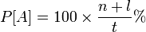
donde:
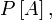 es la probabilidad de abrir la puerta que dentro de la cual está el burro.
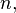 es el número de puertas elegidas al principio.
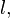 es el número de las puertas que te han enseñado que dentro de las cuales no hay nada..
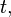 es el número total de puertas.
Se tiene que cumplir que 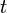 sea un número entero(las puertas no se pueden partir), 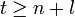 y 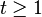.
Si 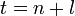 las probabilidades de abrir la puerta que contenga el burro son del 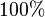.
Si tenemos 3 puertas(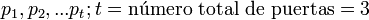), y de ellas tú has elegido 1 puerta(digamos 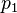) entonces hay 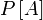 probabilidades de elegir la puerta que dentro contenga el burro siendo:
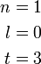
La probabilidad sería:
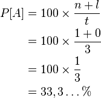
Tiene sentido porque si tú eliges 1 puerta() entre un conjunto de puertas() tienes una probabilidad del 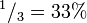 de abrir la puerta que dentro esté el burro.
Pero si te enseñan una puerta (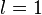) las probabilidades de abrir la puerta que dentro contenga al burro se agrandaría. Siendo:
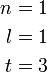
La probabilidad de abrir la puerta que dentro contenga al burro sería:
Si tenemos 100 puertas(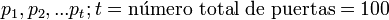), y de ellas tú has elegido 1 puerta(digamos ) entonces hay probabilidades de elegir la puerta que dentro contenga el burro siendo:
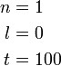
La probabilidad de abrir la puerta que dentro contenga al burro sería:
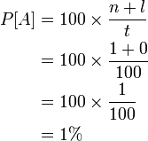
Pero si te enseñan 98 puertas (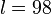) las probabilidades de acertar la puerta se agrandan(sólo quedan 2 puertas cerradas, la que tú has elegido y la que han dejado cerrada. 98 puertas están abiertas y sabemos que dentro no está el burro). Siendo:
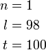
La probabilidad de abrir la puerta que dentro contenga al burro sería:
Una forma más clara de verlo es replantear el problema. Si en lugar de haber sólo tres puertas hubiese 100, y tras la elección original el presentador abriese 98 de las restantes para mostrar que tras de ellas hay cabras. Si no cambiase su elección, ganaría el coche sólo si lo ha escogido originalmente (1 de cada 100 veces); mientras que si la cambia siempre, ganaría cada vez que no lo haya escogido originalmente, o sea, 99 de cada 100 veces.
Por si no se ve claro, aquí va una explicación gráfica: tenemos 3 cajas:
([?][?][?]) antes de comenzar el juego, la probabilidad de encontrar el premio entre las tres cajas es de 1/3 (es decir el premio está dentro del grupo de las tres cajas, y existe una posibilidad entre tres de encontrarlo).
Se elige la 1a.
([?]) vs ([?][?]) ahora hay dos grupos: la caja que yo elegí (con probabilidad 1/3 y el grupo de las otras dos cajas (con probabilidad 2/3).
([?]) vs ([?][?]) = 1/3 vs (1/3,1/3)
Se descubre una cabra del grupo de las dos cajas.
([?]) vs ([B][?]) = x vs (0,1-x)
¿Dónde es más probable que se encuentre el premio? ¿en mi caja o entre las otras dos (aunque una esté descubierta)?
Evidentemente es más probable que esté entre las otras dos.
Comprobémoslo con 6 cajas (cinco contienen cabra y una premio):
([?][?][?][?][?][?])antes de empezar hay una probabilidad 1/6 de encontrar el premio dentro del grupo.
Elijo la primera (o cualquier otra).
([?]) vs ([?][?][?][?][?])ahora hay dos grupos: la caja que yo elegí (con probabilidad 1/6 y el grupo de las otras cinco cajas (con probabilidad 5/6).
Preguntémonos en este punto: ¿dónde es más probable que esté el premio, en la caja que he elegido (1/6) o entre las 5 restantes (5/6)?
Se descubren 4 cabras.
([?]) vs ([B][B][?][B][B])=1/6 vs 5/6.
Otra vez la misma pregunta: ¿dónde es más probable que esté el premio, en mi caja o entre las otras 5?
En el capítulo 101 del libro El curioso incidente del perro a medianoche (2003), Christopher recurre al problema de Monty Hall para demostrar que la intuición puede hacer que nos equivoquemos, mientras que la lógica puede ayudarnos a deducir la respuesta correcta.
En la película 21 blackjack (2008), durante una clase de matemática avanzada, el profesor Mickey Rosa (Kevin Spacey) desafía a Ben Campbell (Jim Sturgess) a que descifre un problema acerca de tres puertas con cambios variables (problema de Monty Hall); éste lo resuelve con éxito.
Bapeswara Rao, V. V. and Rao, M. Bhaskara (1992). "A three-door game show and some of its variants". The Mathematical Scientist 17, no. 2, pp. 89–94
Bohl, Alan H.; Liberatore, Matthew J.; and Nydick, Robert L. (1995). "A Tale of Two Goats... and a Car, or The Importance of Assumptions in Problem Solutions". Journal of Recreational Mathematics 1995, pp. 1–9.
Joseph Bertrand (1889) Calcul des probabilites
Gardner, Martin (1959). "Mathematical Games" column, Scientific American, October 1959, pp. 180–182. Reprinted in The Second Scientific American Book of Mathematical Puzzles and Diversions.
Martin, Phillip (1989). "The Monty Hall Trap", Bridge Today, May-June 1989. Reprinted in Granovetter, Pamela and Matthew, ed. (1993), For Experts Only, Granovetter Books.
Mueser, Peter R. and Granberg, Donald (1999), "The Monty Hall Dilemma Revisited: Understanding the Interaction of Problem Definition and Decision Making" (University of Missouri Working Paper 99-06). http://econwpa.wustl.edu:80/eps/exp/papers/9906/9906001.html (retrieved July 5, 2005).
Nahin, Paul J. Duelling idiots and other probability puzzlers. Princeton University Press, Princeton, NJ: 2000, pp. 192-193. (ISBN 0-691-00979-1).
Selvin, Steve (1975a). "A problem in probability" (letter to the editor). American Statistician 29(1):67 (February 1975).
Selvin, Steve (1975b). "On the Monty Hall problem" (letter to the editor). American Statistician 29(3):134 (August 1975).
Tierney, John (1991). "Behind Monty Hall's Doors: Puzzle, Debate and Answer?", The New York Times21 July1991, Sunday, Section 1; Part 1; Page 1; Column 5
vos Savant, Marilyn (1990). "Ask Marilyn" column, Parade Magazine p. 12 (17 February1990). [cited in Bohl et al., 1995]

{kind=link}